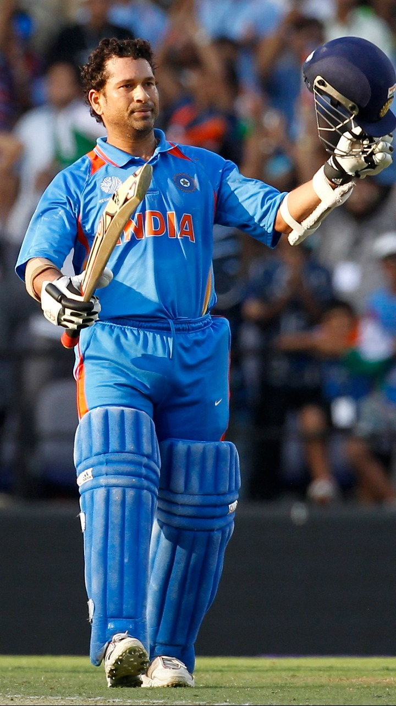

Sachin

Sachin Tendulkar, (/ˌsʌtʃɪn tɛnˈduːlkər/ ⓘ; pronounced [sətɕin teːɳɖulkəɾ]; born 24 April 1973) is an Indian former international cricketer who captained the Indian national team. He is widely regarded as one of the greatest batsmen in the history of cricket.[4] Hailed as the world's most prolific batsman of all time, he is the all-time highest run-scorer in both ODI and Test cricket with more than 18,000 runs and 15,000 runs, respectively.[5] He also holds the record for receiving the most player of the match awards in international cricket.[6] Tendulkar was a Member of Parliament, Rajya Sabha by nomination from 2012 to 2018
| ODI | Tests | |
|---|---|---|
| Matches | 463 | 200 |
| Runs | 18000 | 15000 |